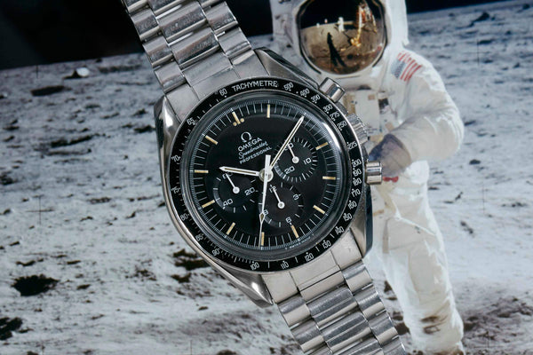

One of Grand Seiko's flagship models, known for the intricate and uniquely designed dials. Nicknamed the snowflake due to the resemblance of its snow covered texture.

Arguably one of the most important watches in history, the Omega Speedmaster was responsible for saving the lives of Apollo 13 on re-entry into the atmosphere when all of their computers broke down. This was the watch chosen to go to space, then the moon, in the most tellevised historic moment in history.